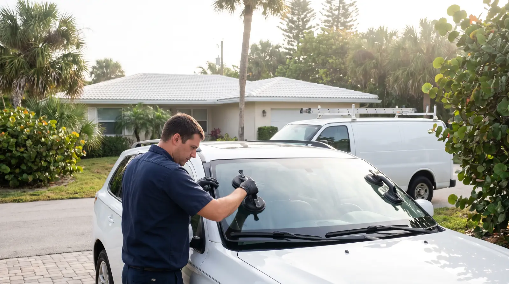
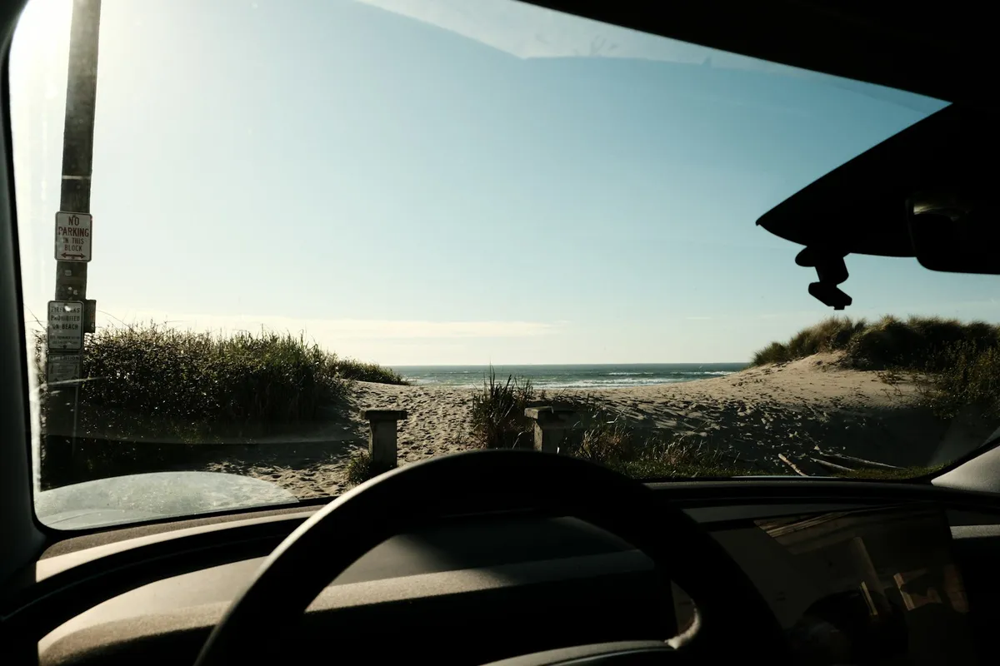
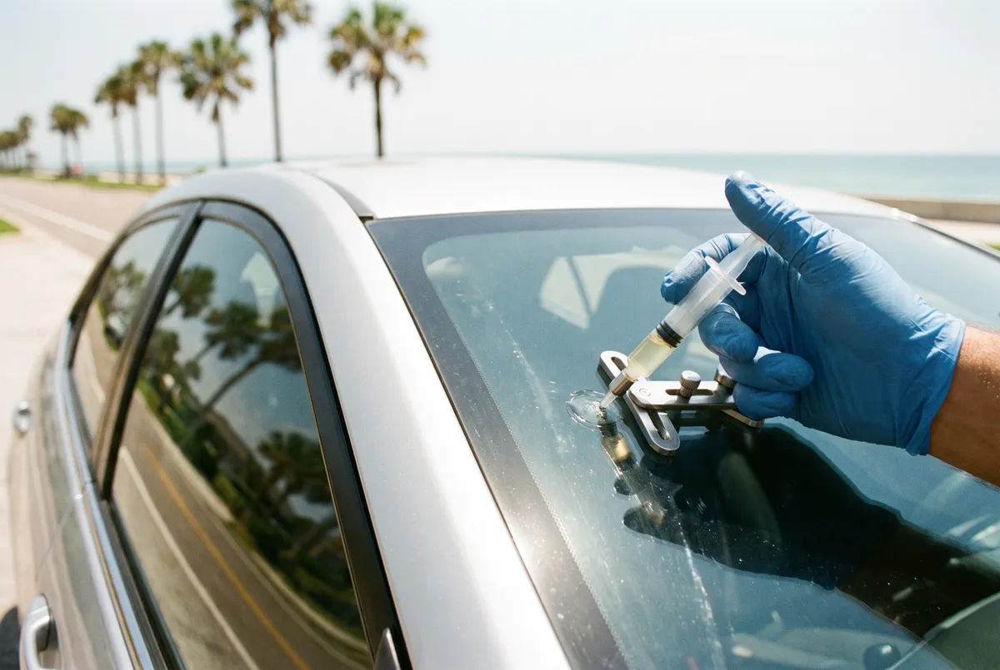
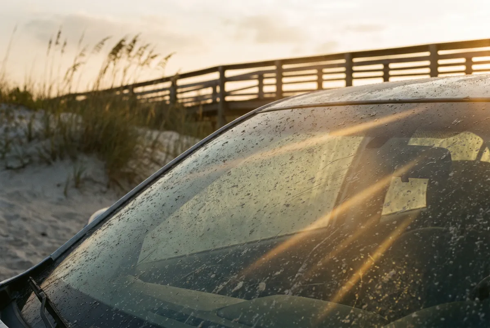
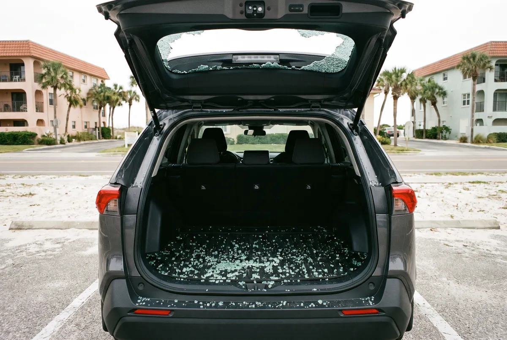
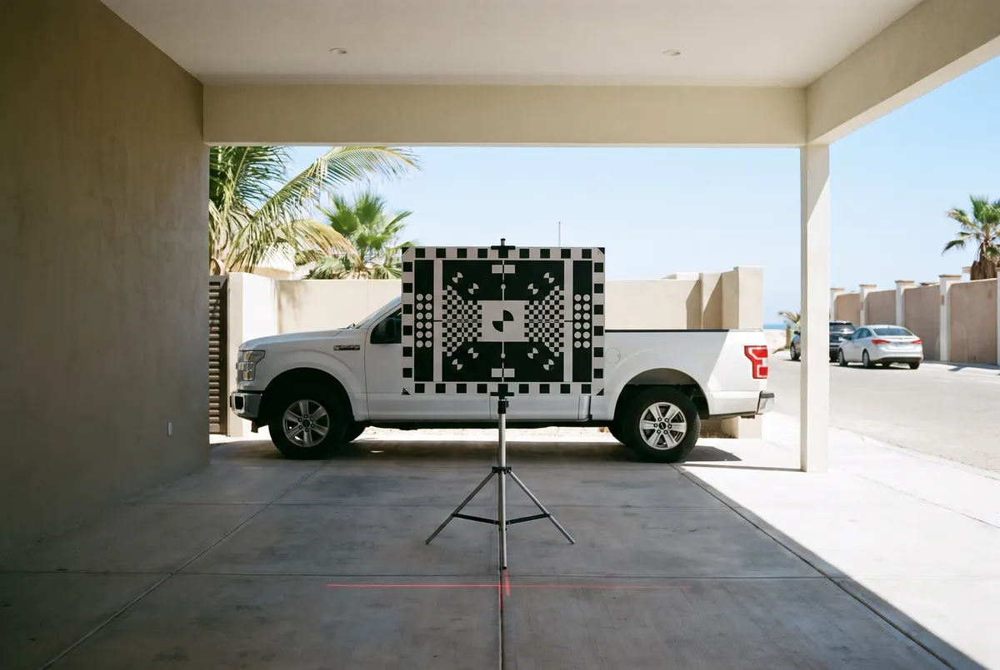

Rock chip on A1A, a windshield worn hazy by sand and salt, or a back window that shattered in the beach lot? Satellite Beach Auto Glass comes to your home, condo or workplace, fixes the glass on the spot and helps with the insurance claim.


The basics
Auto glass repair in Satellite Beach covers every piece of glass on a car, truck or SUV: sealing a rock chip with resin, replacing a cracked or sand-pitted windshield, putting in new back or door glass, and re-aiming the camera that looks through the windshield. Life on the barrier island adds its own wear, from salt spray and blowing sand on A1A to gravel on the causeways.
The windshield is a safety part, not just a window. It is bonded to the body with urethane, it helps the roof hold up in a rollover and it gives the passenger airbag something to push against, so the bond matters as much as the glass.
Signs to watch for
Most calls start with one of these moments. If one matches what you are seeing, the glass needs attention soon.
Trucks heading over the Pineda and Eau Gallie causeways throw gravel. A fresh chip can usually still be sealed.
Sand and salt slowly pit the glass. Sunrise drives east and night headlights start to blur.
Hot glass hit with cold AC is the most common way a small chip runs into a long crack.
A rear window shattered by a break-in or a stray object leaves the car open to rain and salt air.
Palm fronds, coconuts and loose items fly in summer storms and tropical systems along the coast.
A lane-keep or collision warning after a windshield job means the camera was not calibrated.
Our services
Each service is done where your car is parked. Pick the one that fits your damage, or see the full list of Satellite Beach auto glass services.
New front glass for long cracks, edge cracks and damage in the driver’s view.
About windshield replacement →
Resin repair that seals a fresh chip before heat and salt air spread it.
About windshield chip repair →
New glass for windshields sandblasted and hazed by years of beach driving.
About pitted windshield replacement →
Rear windows, liftgate glass and door glass replaced and cleaned up.
About back glass & door windows →
Lane-keep and auto-braking cameras re-aimed after a new windshield.
About ADAS camera calibration →Start to finish
Every mobile windshield job follows the same five steps, whether the car is in a driveway off South Patrick Drive or in a condo lot along A1A.
Call or send the form. We match the exact glass for your vehicle, including sensors and heated areas.
We help start your insurance claim, or give you a written estimate if you are paying on your own.
The hood and dash are covered, the old glass is cut out and the frame is cleaned, rust-checked and primed.
Fresh urethane goes down, the windshield is set and centered, and trim, mirror and sensors go back on.
You get a safe drive-away time, the camera is calibrated if needed and the car is left clean.
Why us
Three things set a careful auto glass job apart on the barrier island, and every appointment is built around them.
Salt air speeds up rust along the windshield frame. We check and prime any bare metal before new glass goes in so the seal lasts.
Prep, primers and adhesive follow the ANSI/AGRSS 002 auto glass replacement standard, and the glass is matched to your exact trim level.
Ocean wind and afternoon storms are part of life here. We book calm mornings or covered spots so the adhesive cures properly.
Cost
The cost of auto glass repair in Satellite Beach depends on what broke and what is built into the glass. A chip repair is the simplest job. A windshield with a rain sensor, heated wiper area, acoustic layer or heads-up display needs more specialized glass, and a forward camera adds a calibration step. Back glass depends on the vehicle and whether it has defrost lines or an antenna.
Insurance often makes the biggest difference. Florida Statute 627.7288 waives the deductible on windshield damage for drivers with comprehensive coverage, so many people pay nothing for a new windshield. Call for a free estimate and we will check your vehicle and your coverage first.
Quick self-check
Mobile auto glass repair in Satellite Beach works for nearly every car, SUV, minivan and pickup. A few jobs belong somewhere else.
Aftercare
Living a few blocks from the ocean is the best part of Satellite Beach, and it is also why windshields here wear out differently than they do inland. Salt spray drifts across South Patrick Drive most days, and sand blows off the dunes onto cars parked near the beach access points. Over time that combination pits the glass and leaves a haze you notice most when driving into the sunrise.
The simplest habit is rinsing. Run fresh water over the windshield before wiping it, so you are not dragging salt crystals and sand across the surface. Keep the washer reservoir full and replace wiper blades every six months, since dried-out rubber holds grit and scratches with every pass.
If you just had new glass installed, skip any wash for 48 hours and keep pressure washers off the edges for the first week while the urethane cures. Many people near the beach schedule regular auto detailing to keep salt off the paint and trim, and that is also a good time to have the glass cleaned properly inside and out. Ask for an ammonia-free cleaner on the inside glass and around any camera behind the mirror.
When the glass starts to look hazy even after a good cleaning, have it checked. Heavy pitting can make glare worse at night, and a new windshield is sometimes the better answer.
Questions
Usually, yes. Florida Statute 627.7288 says drivers with comprehensive coverage pay no deductible for windshield damage, so a covered windshield repair or replacement often costs nothing out of pocket. The rule applies to the windshield only. Back glass, door glass and sunroofs fall under your regular deductible.
Salt itself does not crack glass, but salt spray and blowing sand slowly pit and haze the surface, and salt left on the glass makes wipers drag grit across it. Over a few years that wear shows up as glare at sunrise and in oncoming headlights. Rinsing the glass with fresh water and replacing wipers often slows it down.
Yes. Satellite Beach Auto Glass is a mobile service, so the technician works in your driveway, a condo parking lot or at your workplace. The address on this site is a service office, not a shop where you drop the car off.
Often it can. A chip smaller than a quarter, or a single crack shorter than about six inches, can usually be sealed with resin as long as it is not at the edge of the glass or right in front of the driver. Tell us the size and location and we will say which fix fits.
The install takes about an hour. Then the urethane adhesive needs one to three hours before the car is safe to drive, depending on the product, the heat and the humidity. A chip repair is much faster, usually about 30 minutes.
The glass and frame have to be dry for the adhesive to bond, so we do not install in open rain. On wet or very windy days near the ocean we use a garage, carport or covered parking deck, or move the appointment to a calmer morning.
If the vehicle has lane-keep assist, automatic emergency braking or adaptive cruise, the camera behind the rearview mirror usually needs to be calibrated after the glass is replaced. We check for it when we give the estimate.
Call now for a free auto glass estimate in Satellite Beach. A chip sealed this week can save the whole windshield next month.
Call (321) 435-2356 Now1227 S Patrick Dr Suite 111, Satellite Beach, FL 32937
Please note: This is our service business address — not a storefront or showroom. Satellite Beach Auto Glass is a mobile auto glass service, so we come to you and the office isn’t open to walk-in visitors. Call us and we’ll set up a free estimate.